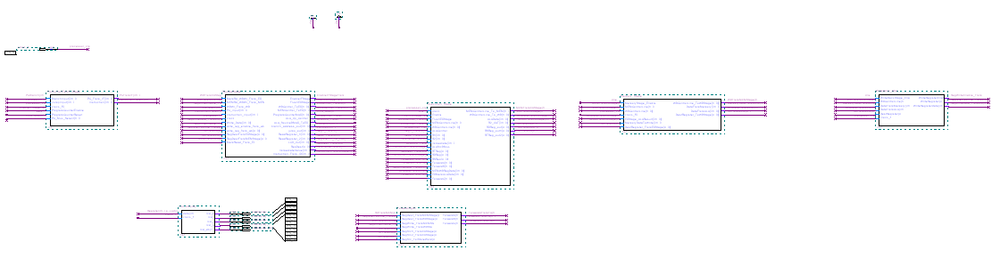

Cache Money Processor
Our processor was written to perform matrix multiplication on two square matrices, up to dimensions of size 10.
Then, the sum of the diagonal of the resulting matrix will be calculated, and displayed on the LCD. This program
can be found here: Matrix Multiplication Program
Our assembler can be downloaded here: Cache Money Assembler
**Please note** This assembler assumes the assembly program is properly formatted. This version does not offer error reporting.
Here is a high-level view of our five stage pipeline.

You may obtain a copy of the Quartus project containing all of the design files for our processor. All of our design
was done using subversion. To obtain the design files / schematics, please use a subversion client to check out
the project from subversion.
Location: https://76.84.185.249:8443/svn/cachemoney/tags/processor_v2.0
UserName: readonly
Password: readonly